#701 · detalle · horizontal · 8682x6221 · Public domain File:Man working behind a desk. Desk is filled with stacks of paper, NINO F Scholten Tel Aviv 351-400 03.tiff Frank Scholten · 1280x917 https://commons.wikimedia.org/wiki/File:Man_working_behind_a_desk._Desk_is_filled_with_stacks_of_paper,_NINO_F_Scholten_Tel_Aviv_351-400_03.tiff
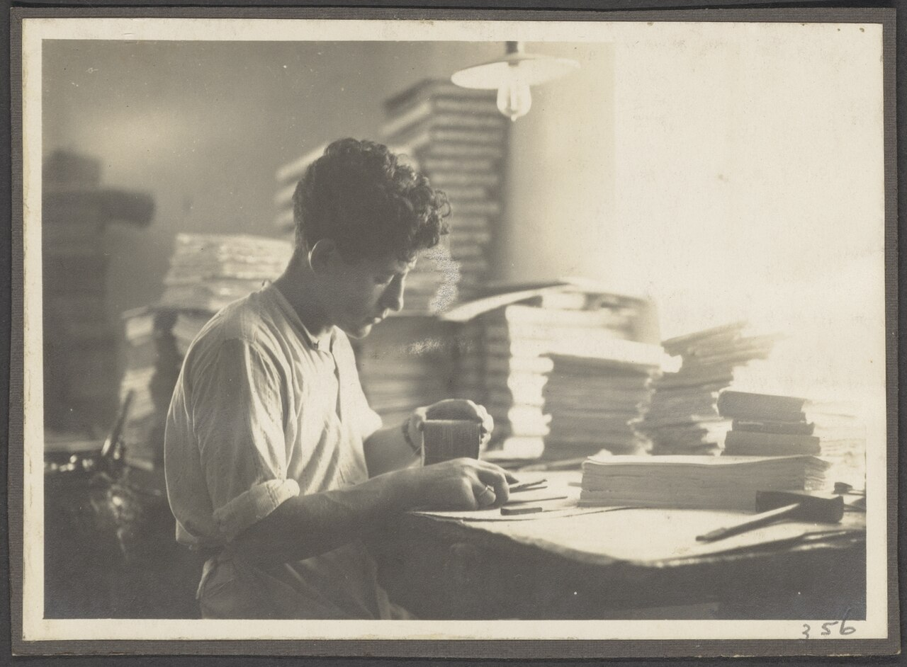
#702 · detalle · horizontal · 2842x2091 · Public domain File:Man working behind a desk. Desk is filled with stacks of paper, NINO F Scholten photographic print 06 004.tiff Frank Scholten · 1280x942 https://commons.wikimedia.org/wiki/File:Man_working_behind_a_desk._Desk_is_filled_with_stacks_of_paper,_NINO_F_Scholten_photographic_print_06_004.tiff
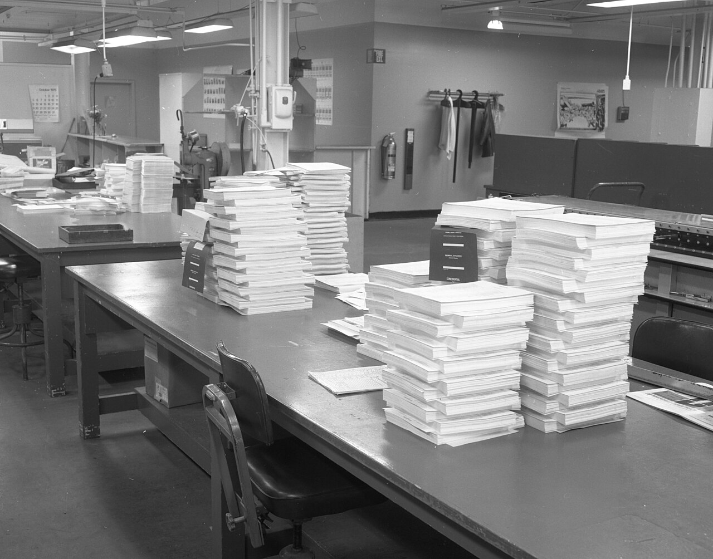
#703 · detalle · horizontal · 1600x1255 · Public domain File:23 0068647 Convair Negative Image - Documents stacked on table (54183370799).jpg San Diego Air & Space Museum Archives · 1280x1004 https://commons.wikimedia.org/wiki/File:23_0068647_Convair_Negative_Image_-_Documents_stacked_on_table_(54183370799).jpg
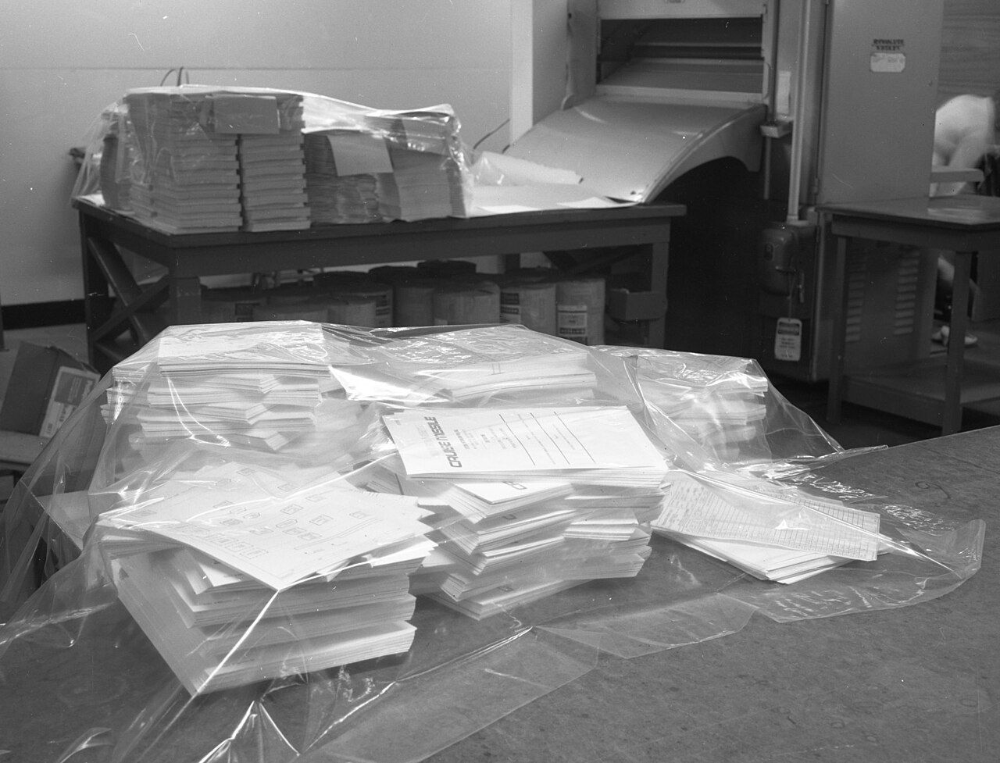
#704 · detalle · horizontal · 1600x1221 · Public domain File:23 0068648 Convair Negative Image - Covered documents stacked on tables (54183370824).jpg San Diego Air & Space Museum Archives · 1280x977 https://commons.wikimedia.org/wiki/File:23_0068648_Convair_Negative_Image_-_Covered_documents_stacked_on_tables_(54183370824).jpg
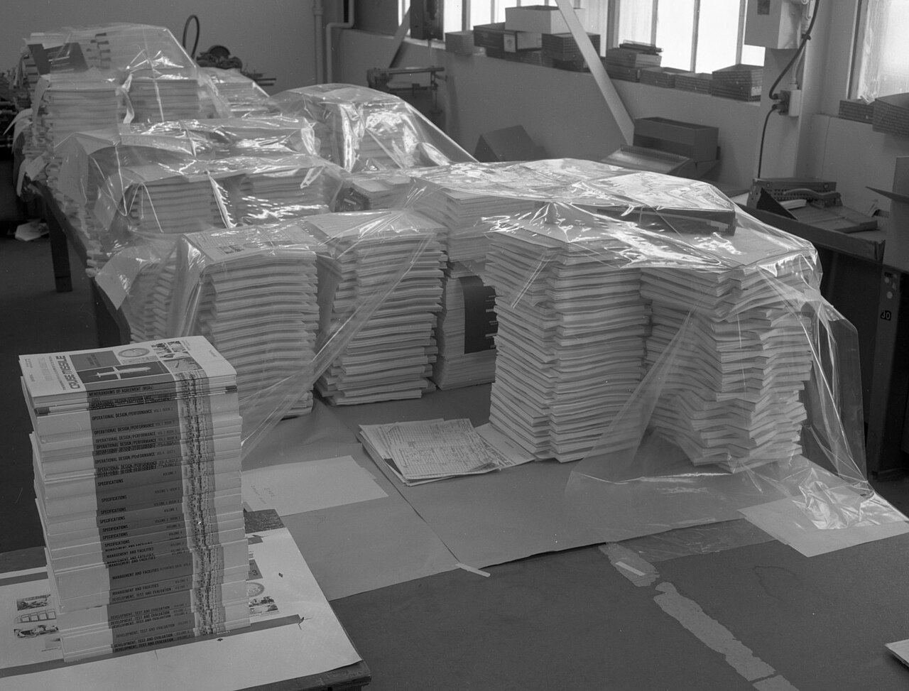
#705 · detalle · horizontal · 1600x1216 · Public domain File:23 0068649 Convair Negative Image - Covered documents stacked on tables (54183357503).jpg San Diego Air & Space Museum Archives · 1280x973 https://commons.wikimedia.org/wiki/File:23_0068649_Convair_Negative_Image_-_Covered_documents_stacked_on_tables_(54183357503).jpg
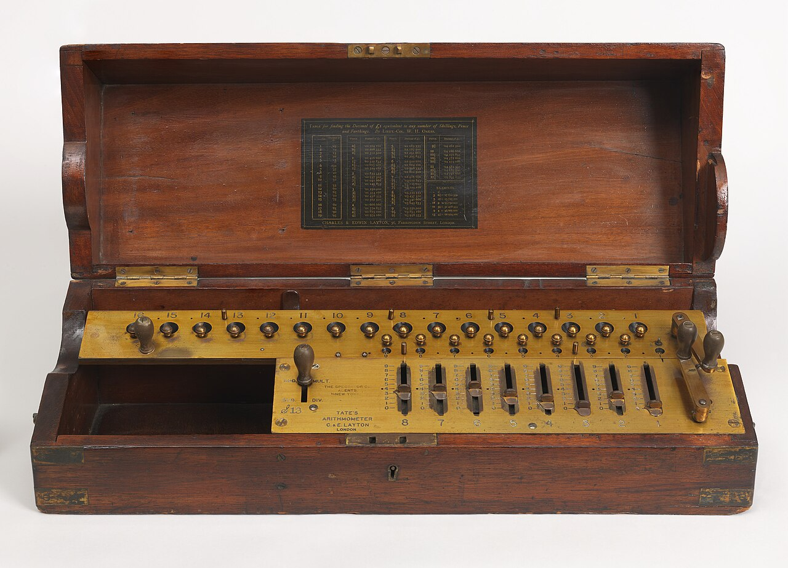
#706 · detalle · horizontal · 4096x2957 · Public domain File:Arithrometer Calculator, ca. 1890 (CH 18650063).jpg Made by Charles & Edwin Layton · 1280x924 https://commons.wikimedia.org/wiki/File:Arithrometer_Calculator,_ca._1890_(CH_18650063).jpg
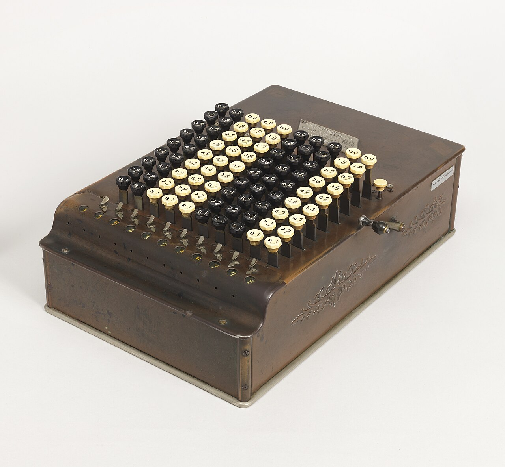
#707 · detalle · cuadrada · 4096x3794 · Public domain File:Comptometer Calculator And Cover, ca. 1887 (CH 18650065).jpg Made by Felt and Tarrant Mfg. Co. · 1280x1186 https://commons.wikimedia.org/wiki/File:Comptometer_Calculator_And_Cover,_ca._1887_(CH_18650065).jpg
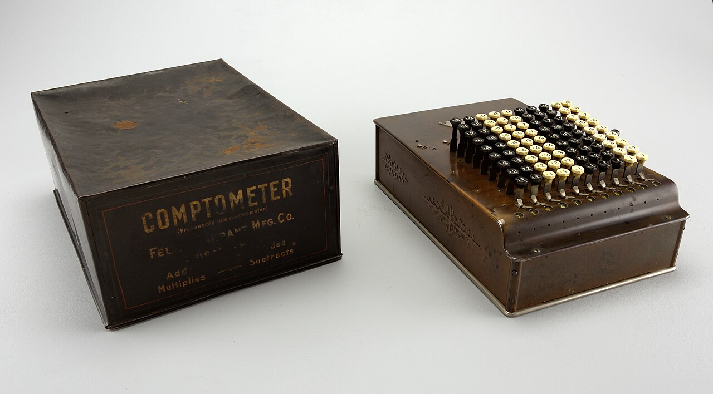
#708 · detalle · horizontal · 4096x2266 · Public domain File:Comptometer Calculator And Cover, ca. 1887 (CH 18650065-2).jpg Made by Felt and Tarrant Mfg. Co. · 1280x708 https://commons.wikimedia.org/wiki/File:Comptometer_Calculator_And_Cover,_ca._1887_(CH_18650065-2).jpg#709 · detalle · horizontal · 4032x3024 · CC0 File:Desktop with laptop and calculator (Unsplash).jpg AnonymousUnknown author · 1280x960 https://commons.wikimedia.org/wiki/File:Desktop_with_laptop_and_calculator_(Unsplash).jpg
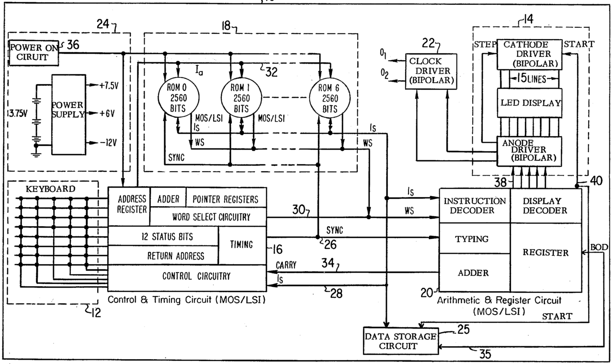
#710 · detalle · horizontal · 2694x1601 · Public domain File:HP35 calculator - block diagram - US patent 4001569.png Dickinson et al. · 1280x761 https://commons.wikimedia.org/wiki/File:HP35_calculator_-_block_diagram_-_US_patent_4001569.png
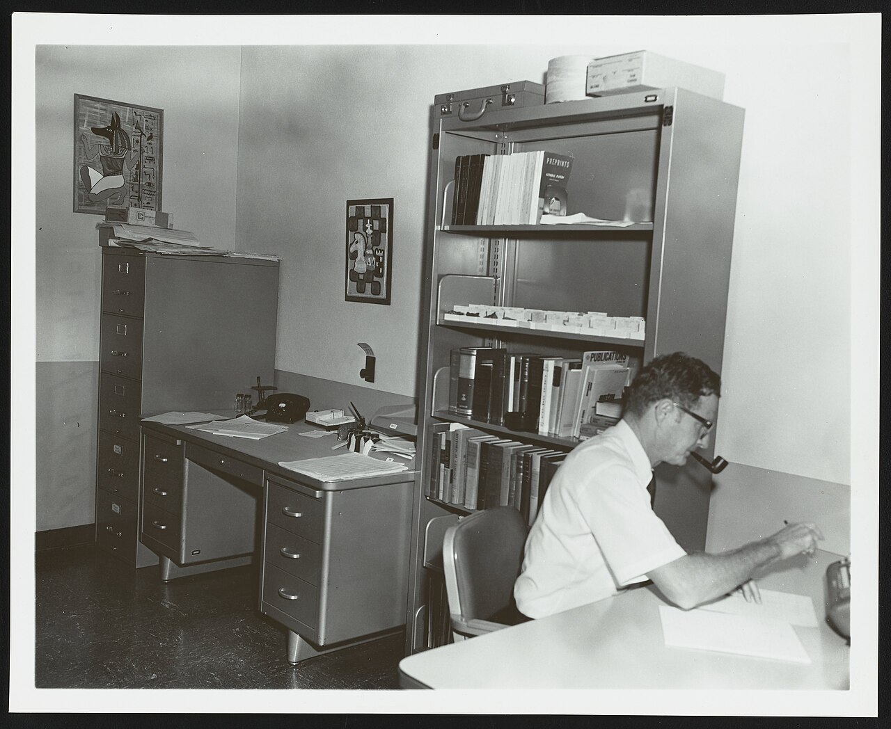
#711 · detalle · horizontal · 4239x3472 · Public domain File:Henry Earle Lumpkin in office at Exxon Research and Engineering Company laboratory 1969.jpg Courtesy of Science History Institute, No Known Copyright · 1280x1048 https://commons.wikimedia.org/wiki/File:Henry_Earle_Lumpkin_in_office_at_Exxon_Research_and_Engineering_Company_laboratory_1969.jpg
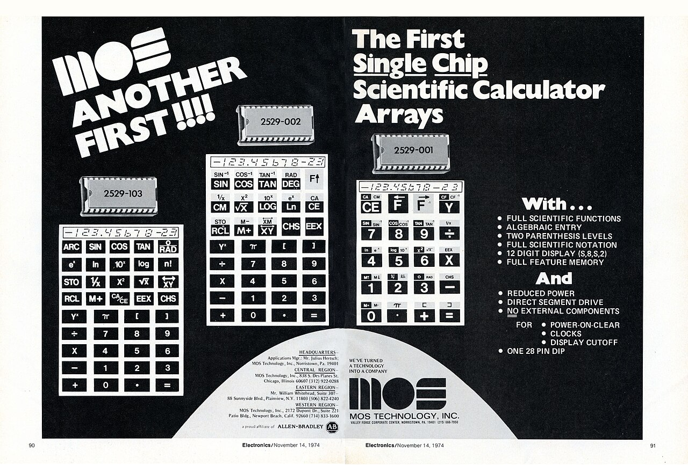
#712 · detalle · horizontal · 2438x1650 · Public domain File:MOS Technology Calculator Chip Ad 1974.jpg MOS Technology. · 1280x866 https://commons.wikimedia.org/wiki/File:MOS_Technology_Calculator_Chip_Ad_1974.jpg
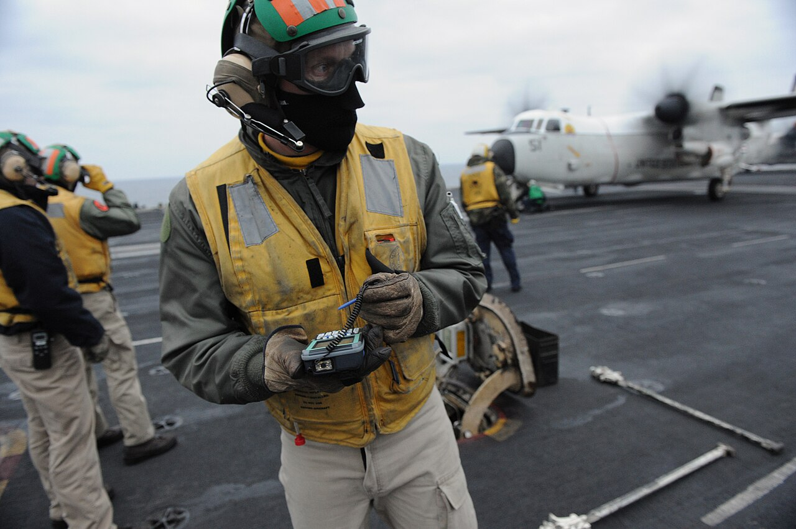
#713 · detalle · horizontal · 2100x1397 · Public domain File:US Navy 110127-N-7676W-245 Lt. Andrew Wiese evaluates a catapult capacity selector valve (CSV) calculator provided by the Office of Naval Research.jpg U.S. Navy photo by John F. Williams · 1280x852 https://commons.wikimedia.org/wiki/File:US_Navy_110127-N-7676W-245_Lt._Andrew_Wiese_evaluates_a_catapult_capacity_selector_valve_(CSV)_calculator_provided_by_the_Office_of_Naval_Research.jpg
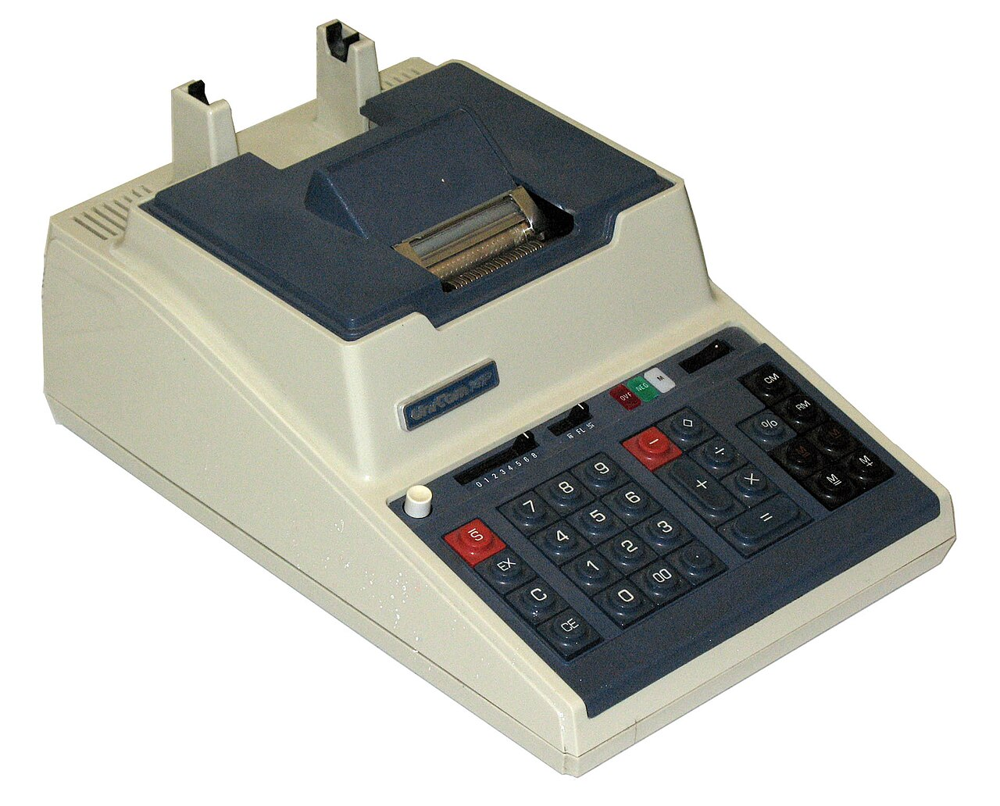
#714 · detalle · horizontal · 1897x1530 · Public domain File:Unicom 141P Calculator 1.jpg Swtpc6800 Michael Holley · 1280x1032 https://commons.wikimedia.org/wiki/File:Unicom_141P_Calculator_1.jpg
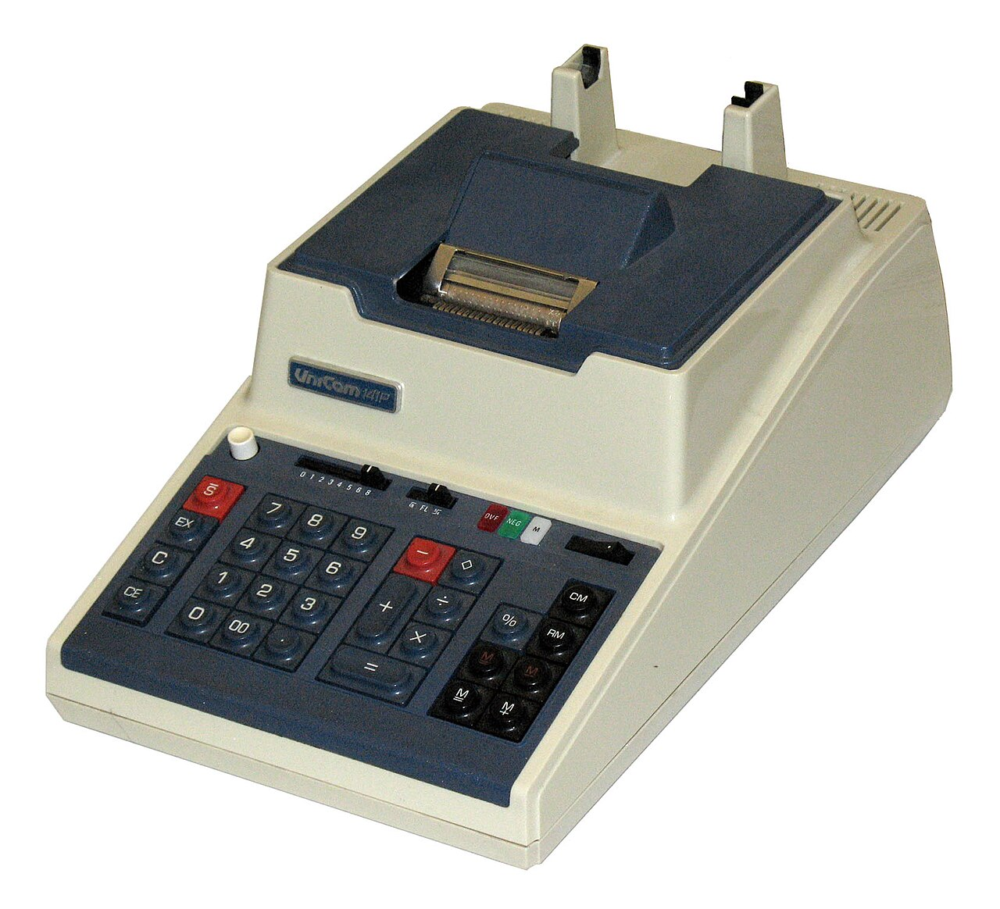
#715 · detalle · cuadrada · 1683x1530 · Public domain File:Unicom 141P Calculator 2.jpg Swtpc6800 Michael Holley · 1280x1164 https://commons.wikimedia.org/wiki/File:Unicom_141P_Calculator_2.jpg
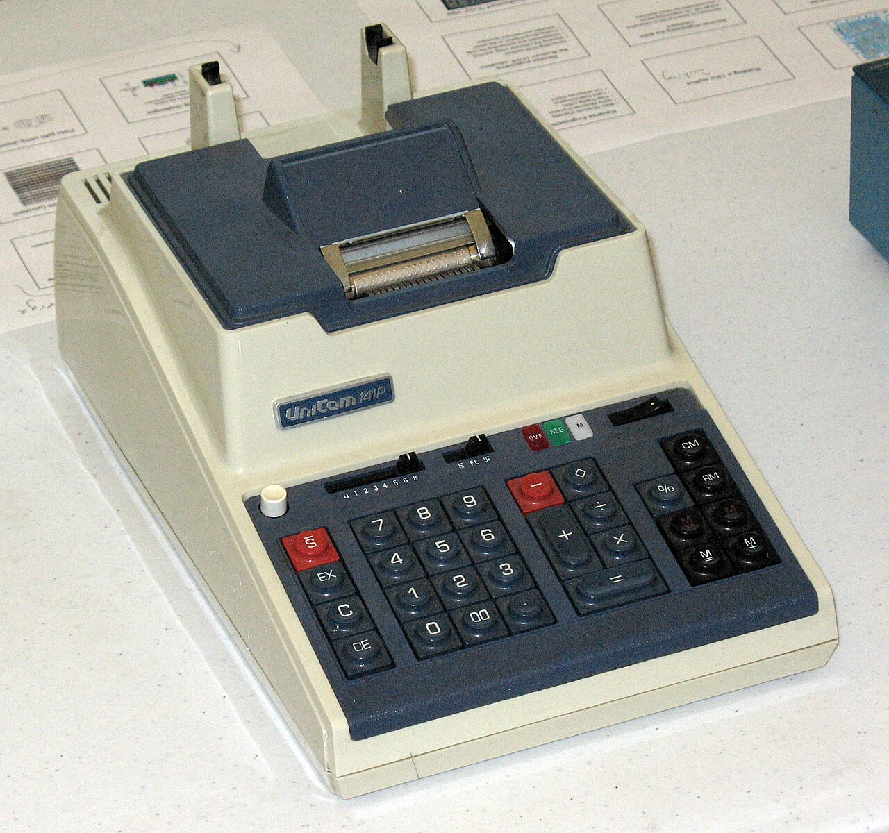
#716 · detalle · cuadrada · 1632x1530 · Public domain File:Unicom 141P Calculator 3.jpg Swtpc6800 Michael Holley · 1280x1200 https://commons.wikimedia.org/wiki/File:Unicom_141P_Calculator_3.jpg#717 · detalle · horizontal · 4000x2660 · CC0 File:Laptop and coffee on a desk.jpg Lauren Mancke · 1280x851 https://commons.wikimedia.org/wiki/File:Laptop_and_coffee_on_a_desk.jpg